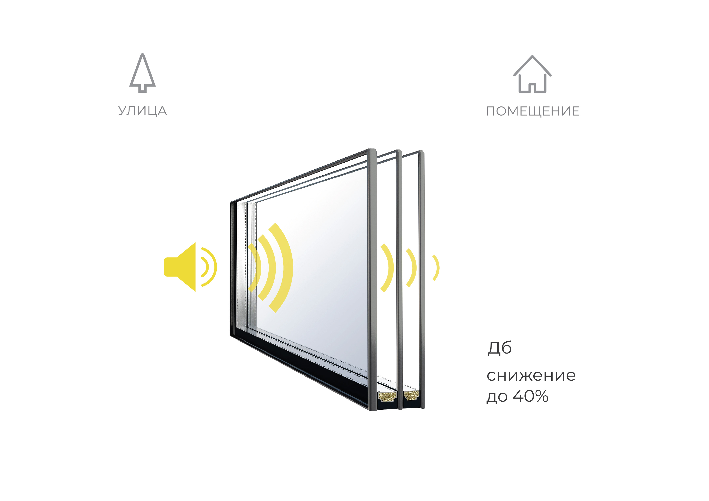
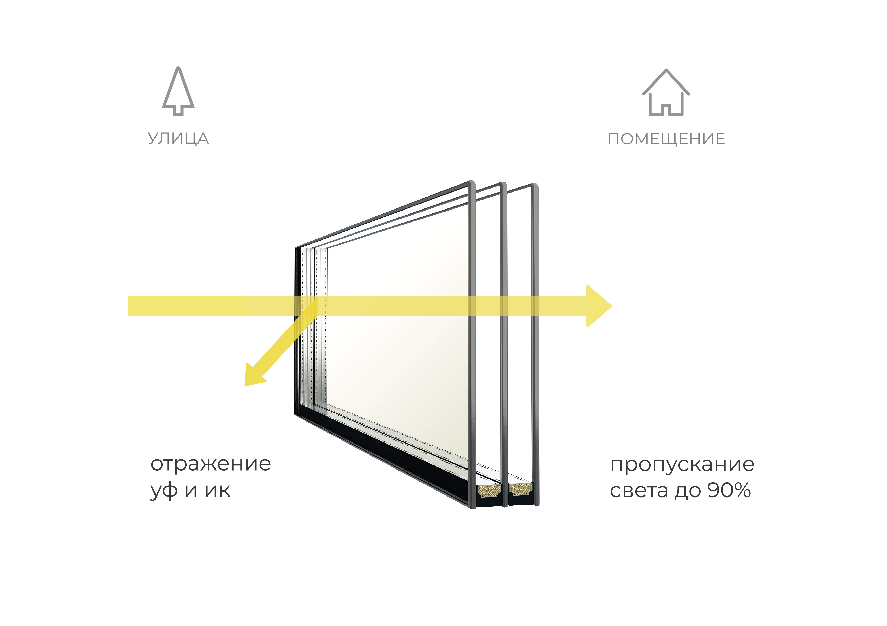
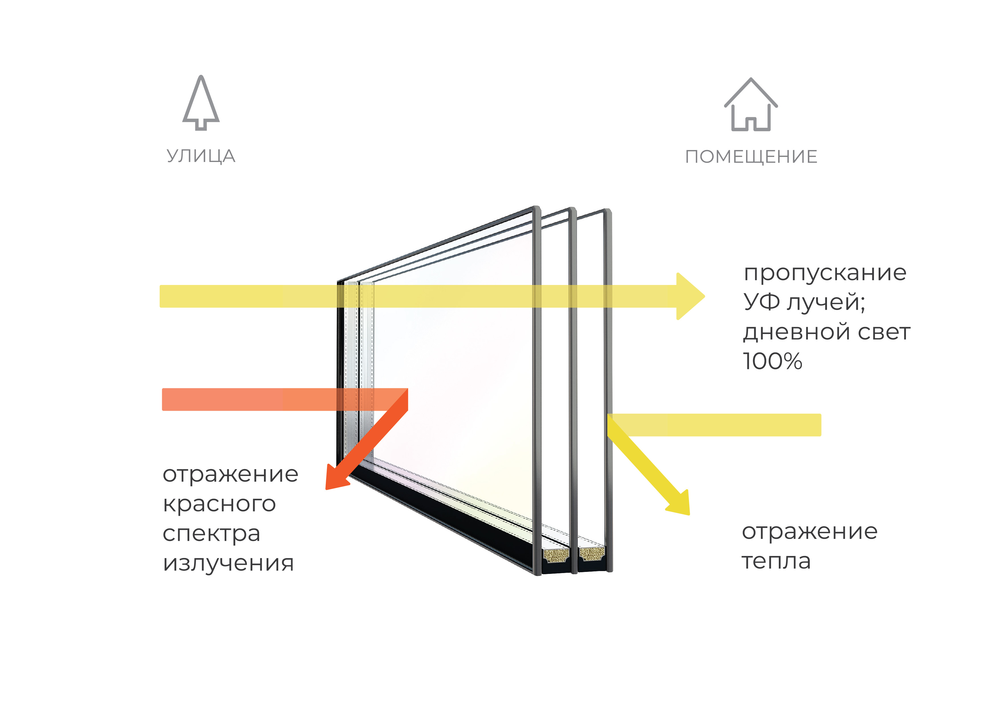

Шумозащитый стеклопакет
Стеклопакет с высоким шумопоглощением позволит наслаждаться тишиной, даже если ваши окна выходят на автомагистраль или железную дорогу. Чтобы добиться хорошей звукоизоляции, мы используем внешнее стекло большей толщины и (или) триплекс, и ассимитричную ширину камер в стеклопакете.

Тонированный стеклопакет
Тонированный стеклопакет придаёт зданию современный, стильный облик и защищает от любопытных взглядов. Искажение цветопередачи сведено к минимуму благодаря применению инновационных технологий, при этом снаружи стекло имеет стильный оттенок, подобранный под архитектурные требования конкретного объекта. Кроме эстетических преимуществ такие стекла препятствуют попаданию внутрь помещения прямых солнечных лучей. В жаркие дни особенно заметно, что помещения, в которых установлены тонированные стеклопакеты, отличаются наибольшим комфортом и прохладной температурой воздуха.

Ударопрочный стеклопакет
Ударопрочные стеклопакеты устойчивы к механическим повреждениям, защищают от проникновения и обеспечивают безопасность эксплуатации. Степень защиты может быть разной – вплоть до пуленепробиваемых классов. Несмотря на высокую прочность, защитное стекло визуально не отличается от обычного и имеет практически идентичные показатели светопропускания.
Наши светопрозрачные конструкции мы заполняем стеклопакетами фирмы Guardian Glass